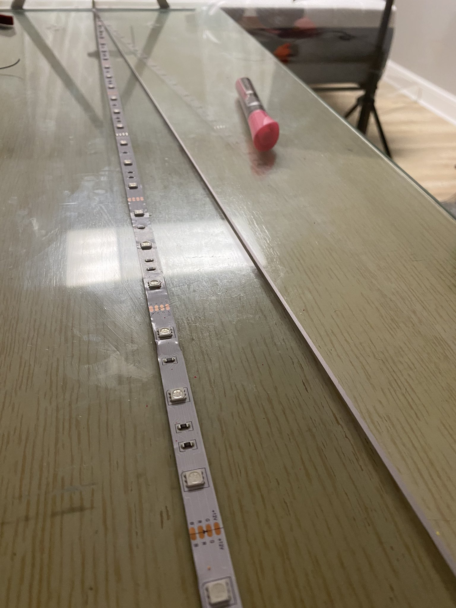
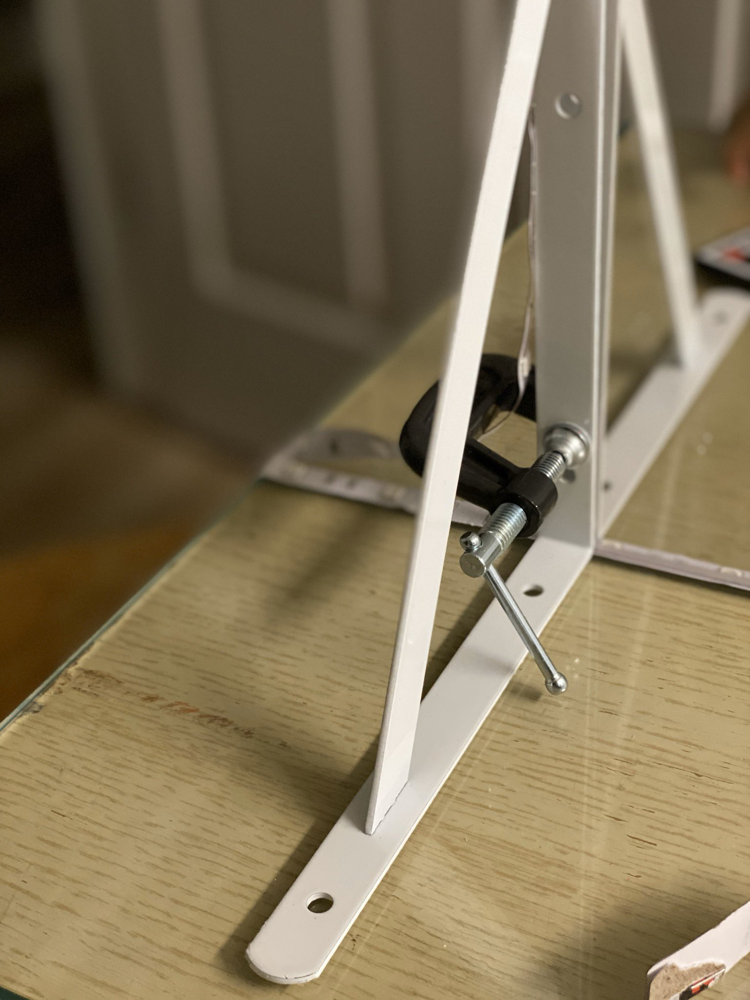
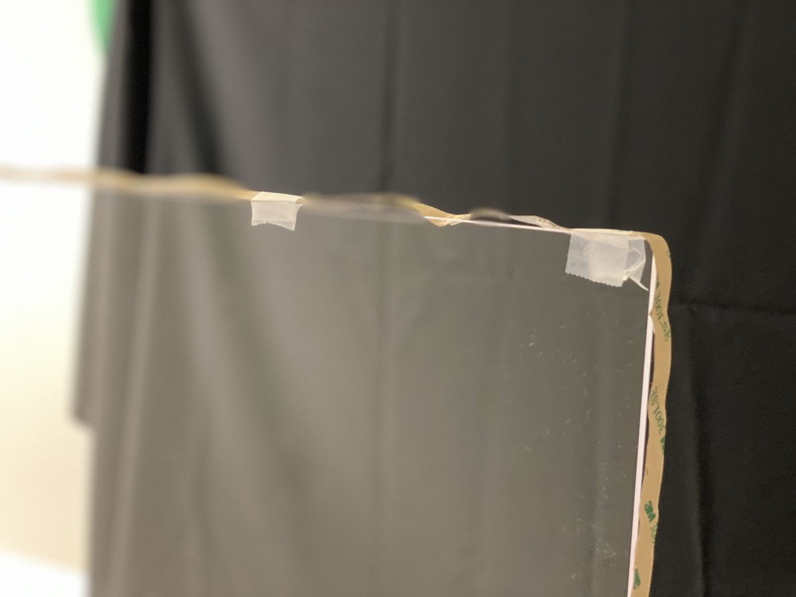

Here are some examples of my DIY lightboard in action!
* How logging symptoms helps slow the virus spread
* Lucy D’Agostino McGowan discusses peer learning communities
* Law of Iterated Expectation
This summer in an effort to spruce up my home office and online statistics courses, I was in search of a simple solution that would let me walk through equations, as I normally would with a whiteboard in my office, remotely. Enter the lightboard! I love the aesthetic of these! They let you work through fun equations while still letting the viewer see your facial expressions, getting as close to an “in person” interaction as I’ve seen! The downside? They are super pricey! Some sites were quoting over $2,500 for the simpliest models. Even DIY “kits” were coming in at over $1,000 - yikes! Then I came across this amazing YouTube video that lays out a simple DIY method that can be put together for much less - in fact, I was able to get my supplies together for less than $100. I put together a quick tweetorial outlining the steps and the supplies I used; I thought I’d copy the contents here, since a blogpost is sometimes a bit easier to read!
Supplies
⬜ 1/4 x 24 x 36 plexiglass
💡 16ft of LED strip lights
🗜2 one inch C-clamps
📖 4 bookshelf L brackets
🖊 neon markers
Step 1
💡 stick 3ft of the LED strip lights on a table
☝️ your plexiglass will sit on top of this

Step 2
🥪 put your plexiglass between two of the shelf brackets on one side
🗜 fasten with the C-clamp
🔁 repeat on the other side

Step 3
💡 wrap the LED strip lights around the remainder of the plexiglass
☝️ I used a little tape to hold it on

Step 4
🤳 set up camera
🥳 use fun markers
↔︎️ flip video to mirror image